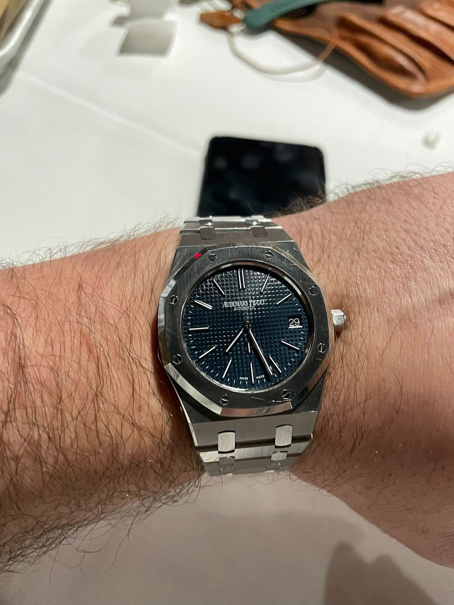

Where jewelry meets machinery and the secondary market never sleeps. The watch desk reads Swiss export data, brand strategy and auction results — and tracks the collector indices that turned wristwatches into an asset class with a service manual.

Diamond-set footballs, athlete ambassadors, limited editions timed to the tournament — the industry is spending the summer converting football fever into waiting lists.
After the 2022–24 correction, blue-chip references have stabilized. Dealers report clean two-way trade again — the speculative froth is gone, the collector base isn't.
Waiting lists for steel icons persist because supply discipline works. The desks reads allocation strategy the way the diamond desk reads the sight.
Unauthorized but legal dealers trading new watches outside official channels. Grey premiums and discounts are the truest real-time price signal in the industry — we quote them daily.
A maison that builds its own movements rather than buying them. The word carries a price premium and a century of Swiss industrial politics.
A watch's model number — collectors trade references the way equity desks trade tickers. One digit can double a price at auction.
Any function beyond telling the time: chronograph, perpetual calendar, minute repeater. Complexity is the currency of horological prestige — and of service costs.
H1 revenue CHF 3.12B (+2% reported), watches and jewelry CHF 2.95B; US +27%, Japan +20%, Spain +28%, China incl. HK/Macau +9%. Net profit fell 6% to CHF 16M. The group expects a stronger second half on May–July momentum.
The FH reported June exports of CHF 2.4 billion on 1.3 million pieces (+11.7% volume) — the strongest month of 2026 after April's −16.6% and May's +0.4%. The US took CHF 349M (+12.7%), France doubled to CHF 250M (+103.5%), and the CHF 200–500 band grew 54.1% while CHF 500–3,000 fell 4.7%. H1 stands at CHF 12.8B, −0.7%.
2025 accounts show £7.8M operating profit on £105M sales; Manchester AP House booked £7.4M sales and a £738K loss in year one; UK property and fittings rose from £2.8M to £17.6M. Clifton Street AP House opened Feb 2026.
Morgan Stanley × WatchCharts: launch-era ~40% premium now 22.6% median; Q2 program sales $186M; 157 of 712 retailers enrolled; top-three inventory share down from 63% to 48%; median participating retailer's H1 CPO revenue $899k, from $578k.
Q1 to June 30: group sales €6.3B, +20% constant currency (+17% actual); Americas +27% to €1.7B; direct retail +24%; specialist watchmakers return to growth at +8% to €873M after a -4% FY26.